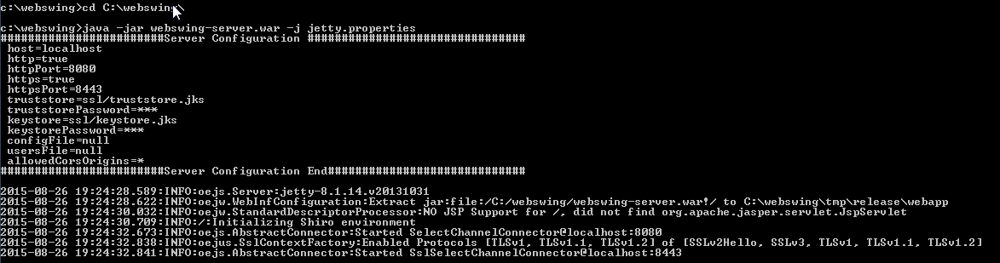

Webswing documentation
Bring your swing applications to web browser. Instantly.
Webswing project page Webswing.org
Documentation sources are located in /documentation folder
Note: Please help us improve this documentation by sending us feedback or pull requests. Any improvements or suggestions are appreciated.
Overview
Webswing is a specialized web server for running any Swing based Java application in your browser. Webswing offers unique instant solution for:
all this with:
- No browser plugin - only HTML5
- No code modification or conversion
- Works with any custom components and frameworks
Features
Webswing provides many convenient integrated features which makes working with webswing application as easy as if they were running localy.
- Printing integration with preview
- Filesystem integration - download / upload / delete files in isolated folder
- Advanced Clipboard integration
- JsLink - javascript to Java calls and vice versa
- Embedable javascript - embed Webswing in your web page
- Session recording and playback capability built-in
- Mirror view - see what users see from admin console
- Configure your application from admin console
- Configurable Swing window decoration themes
- Java 6, 7 and 8 support
- DirectDraw - renering directly from Java2d to HTML Canvas
Running your application in Webswing brings many advantages compared to standard desktop use like:
- Swing application codebase protection
- Easy distribution of new application version
- Control of Java version used for running Swing applications
- No security threats from outdated Java runtime on client machines
- Faster connection to backend services
- Centralized access management
Quick Start Guide
This step by step guide will help you install and start Webswing server and setup your swing application in 5 minutes.
Prerequisities
- JRE 6,7 or 8 installed
- Modern browser installed
For the purpose of this guide we will use Windows based box. Linux installation is covered in separate page.
Download the distribution from Webswing home page and unzip it to new folder. For demonstration we will C:\webswing

Open the start.bat in text editor and make sure you are using the corrent java executable. (Verify by running java -version in your command line.)
Double click on start.bat file to start Webswing server.

Open your borwser to address http://localhost:8080

Login using the default username and password admin and pwd.

Now you can see the list of demo applications and Admin console icon in the selection. Click on the Admin console.

In Admin console navigate to Settings -> Server configuration. Here we can add new swing application to webswing.config json configuration file.

Click on the New button on the Swing applications tab. And fill in the basic details as required. Hover over the question mark for setting explanation.

Set the application main class and classpath.

Setup security

Now click on the Apply button to save and apply the new configuration.
Load the first page again, http://localhost:8080, where you should see the newly configured application.

Click on the application to start the swing inside the browser.

In case the application failed to start, search for the problem in the log file webswing.log located in the webswing folder - in our case C:\webswing.